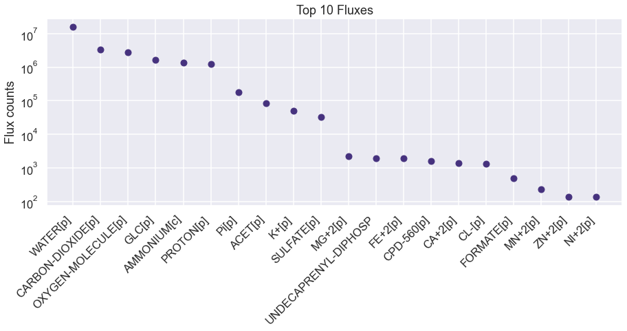
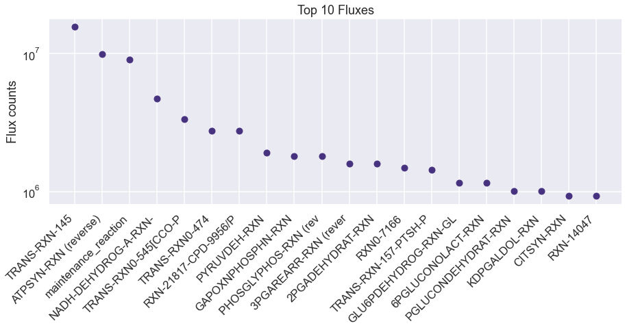
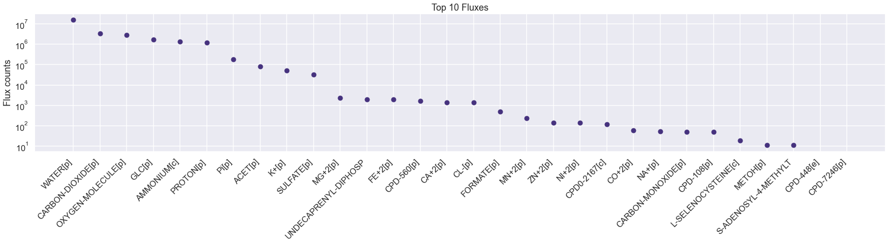

[1]:
%load_ext autoreload
%autoreload 2
import numpy as np
import seaborn as sns
import pandas as pd
import os
import matplotlib.pyplot as plt
import dill
import requests
import xmltodict
import cvxpy as cp
import itertools
from scipy.special import logsumexp
sns.set(style='darkgrid', palette='viridis', context='talk')
os.chdir(os.path.expanduser('~/vivarium-ecoli'))
from ecoli.processes.metabolism_redux import NetworkFlowModel, FlowResult, BAD_RXNS, FREE_RXNS
Import simulation output
Before running this, run a sim in ecoli/experiments/metabolism_redux_sim.py with -n 2 to generate a simulation output. This is necessary to replicate the simulation environment. Use the default .json config.
[2]:
time = '10'
date = '2023-04-24'
experiment = 'fba-redux'
entry = f'{experiment}_{time}_{date}'
folder = f'out/fbagd/{entry}/'
[3]:
output = np.load(folder + 'output.npy',allow_pickle='TRUE').item()
# output = np.load(r"out/geneRxnVerifData/output_glc.npy", allow_pickle=True, encoding='ASCII').tolist()
output = output['agents']['0']
fba = output['listeners']['fba_results']
mass = output['listeners']['mass']
bulk = pd.DataFrame(output['bulk'])
[4]:
f = open(folder + 'agent_steps.pkl', 'rb')
agent = dill.load(f)
f.close()
[5]:
type = 'ecoli-metabolism-redux'
if type == 'ecoli-metabolism-redux':
metabolism = agent['ecoli-metabolism-redux']
stoichiometry = metabolism.stoichiometry
stoichiometric_matrix_dict = {item["reaction id"]: item["stoichiometry"] for item in stoichiometry}
elif type == 'ecoli-metabolism':
stoichiometry = agent['ecoli-metabolism'].model.stoichiometry
maintenance_reaction = agent['ecoli-metabolism'].model.maintenance_reaction
stoichiometry["maintenance_reaction"] = maintenance_reaction
# for rxn in BAD_RXNS:
# stoichiometric_matrix_dict.pop(rxn, None)
Pandas automatically understands dicts of dicts as matrices.
[6]:
sim_exchanges = pd.DataFrame(fba["estimated_exchange_dmdt"])
sim_exchanges = pd.DataFrame(sim_exchanges.loc[4, :].abs().sort_values(ascending=False))
sim_exchanges.head(10)
# plot the top 10 fluxes from sim_fluxes as a bar plot.
plt.figure(figsize=(15, 5))
plt.plot(sim_exchanges.head(20), 'o')
# shorten all xtick names to 10 characters
plt.xticks([i for i in range(20)], [i[:20] for i in sim_exchanges.index[:20]], rotation=45, ha= 'right')
# make xticks aligned to right left of bar
plt.yscale('log')
plt.ylabel('Flux counts')
plt.title('Top 10 Fluxes')
plt.show()

[7]:
sim_fluxes = pd.DataFrame(fba["estimated_fluxes"])
sim_fluxes = pd.DataFrame(sim_fluxes.loc[4, :].abs().sort_values(ascending=False))
# plot the top 10 fluxes from sim_fluxes as a bar plot.
plt.figure(figsize=(15, 5))
plt.plot(sim_fluxes.head(20), 'o')
# shorten all xtick names to 10 characters
plt.xticks([i for i in range(20)], [i[:20] for i in sim_fluxes.index[:20]], rotation=45, ha= 'right')
# make xticks aligned to right left of bar
plt.ylabel('Flux counts')
# log scale
plt.yscale('log')
plt.title('Top 10 Fluxes')
plt.show()

[8]:
sim_fluxes.head(20)
[8]:
| 4 | |
|---|---|
| TRANS-RXN-145 | 15675360.0 |
| ATPSYN-RXN (reverse) | 9936179.0 |
| maintenance_reaction | 9067240.0 |
| NADH-DEHYDROG-A-RXN-NADH/UBIQUINONE-8/PROTON//NAD/CPD-9956/PROTON.46. | 4744591.0 |
| TRANS-RXN0-545[CCO-PM-BAC-NEG]-CARBON-DIOXIDE//CARBON-DIOXIDE.47. (reverse) | 3364670.0 |
| TRANS-RXN0-474 | 2771827.0 |
| RXN-21817-CPD-9956/PROTON/OXYGEN-MOLECULE//UBIQUINONE-8/PROTON/WATER.59. | 2771749.0 |
| PYRUVDEH-RXN | 1910777.0 |
| GAPOXNPHOSPHN-RXN | 1813836.0 |
| PHOSGLYPHOS-RXN (reverse) | 1813828.0 |
| 3PGAREARR-RXN (reverse) | 1591241.0 |
| 2PGADEHYDRAT-RXN | 1591193.0 |
| RXN0-7166 | 1482753.0 |
| TRANS-RXN-157-PTSH-PHOSPHORYLATED/GLC//GLC-6-P/PTSH-MONOMER.46. | 1438691.0 |
| GLU6PDEHYDROG-RXN-GLC-6-P/NADP//D-6-P-GLUCONO-DELTA-LACTONE/NADPH/PROTON.55. | 1149193.0 |
| 6PGLUCONOLACT-RXN | 1149193.0 |
| PGLUCONDEHYDRAT-RXN | 1009534.0 |
| KDPGALDOL-RXN | 1009534.0 |
| CITSYN-RXN | 927632.0 |
| RXN-14047 | 926660.0 |
[9]:
sim_catalysts = pd.DataFrame(fba["reaction_catalyst_counts"])
sim_catalysts = pd.DataFrame(sim_catalysts.loc[4, :].abs().sort_values(ascending=False))
sim_catalysts
[9]:
| 4 | |
|---|---|
| RXN0-1741-MALTOSE//MALTOSE.17. | 40249 |
| RXN-15315 | 40223 |
| TRANS-RXN0-445-CHITOBIOSE//CHITOBIOSE.23. | 40223 |
| RXN0-0-N-ACETYLNEURAMINATE//N-ACETYLNEURAMINATE.41. | 40223 |
| RXN0-0-N-ACETYLNEURAMINATE//CPD0-1123.31. | 40223 |
| ... | ... |
| TRANS-RXN-100 | 0 |
| RXN-17726-CPD-3561/WATER//GALACTOSE/CPD-10723.36. | 0 |
| RXN-17726-CPD-3561/WATER//GALACTOSE/BETA-D-FRUCTOSE.42. | 0 |
| RXN-17726 | 0 |
| RXN-17786 (reverse) | 0 |
7503 rows × 1 columns
Test changing nutrient composition
[10]:
uptake = (fba["unconstrained_molecules"][3]).copy()
uptake_c = fba["constrained_molecules"]
uptake.extend(list(uptake_c.keys()))
uptake = set(uptake)
# addition = set(["CPD0-1074[c]"])
addition = set([
# "FRU[p]",
# "NITRATE[p]"
# 'THIAMINE[p]',
# 'HYDROGEN-MOLECULE[p]',
# 'FUM[p]'
])
removals = set([
# "GLC[p]",
# # 'AMMONIUM[c]',
# # 'WATER[p]'
# # 'Pi[p]',
# # 'SULFATE[p]'
# 'OXYGEN-MOLECULE[p]'
])
uptake = uptake | addition
uptake = uptake - removals
uptake
[10]:
{'AMMONIUM[c]',
'CA+2[p]',
'CARBON-DIOXIDE[p]',
'CL-[p]',
'CO+2[p]',
'FE+2[p]',
'GLC[p]',
'K+[p]',
'L-SELENOCYSTEINE[c]',
'MG+2[p]',
'MN+2[p]',
'NA+[p]',
'NI+2[p]',
'OXYGEN-MOLECULE[p]',
'Pi[p]',
'SULFATE[p]',
'WATER[p]',
'ZN+2[p]'}
Use NetworkFlowModel class to run model
[11]:
homeostatic = pd.DataFrame(fba["target_homeostatic_dmdt"]).loc[4, :]
exchanges = pd.DataFrame(fba["estimated_exchange_dmdt"]).loc[4, :]
maintenance = pd.DataFrame(fba["maintenance_target"]).at[4, 'maintenance_reaction']
kinetic = pd.DataFrame(fba["target_kinetic_fluxes"]).loc[4, :]
homeostatic
[11]:
2-3-DIHYDROXYBENZOATE[c] 73.0
2-KETOGLUTARATE[c] 186.0
2-PG[c] 49.0
2K-4CH3-PENTANOATE[c] 73.0
4-AMINO-BUTYRATE[c] 160.0
...
MN+2[p] 52.0
NA+[p] 52.0
OXYGEN-MOLECULE[p] 51.0
CA+2[p] 52.0
Pi[p] 52.0
Name: 4, Length: 171, dtype: float64
[12]:
model = NetworkFlowModel(reactions=stoichiometric_matrix_dict,
homeostatic_metabolites=metabolism.homeostatic_objective,
free_reactions=FREE_RXNS)
[13]:
model.set_up_exchanges(exchanges=metabolism.exchange_molecules, uptakes=metabolism.allowed_exchange_uptake)
[14]:
solution: FlowResult = model.solve(homeostatic_targets=dict(homeostatic),
maintenance_target=maintenance,
kinetic_targets=dict(kinetic),
reaction_catalyst_counts=sim_catalysts.to_dict()[4],
objective_weights={'secretion': 0.01, 'efficiency': 0.0001, 'kinetics': 0.000001},
upper_flux_bound=100000000)
[23]:
cur_exchanges = pd.Series(solution.exchanges).abs().sort_values(ascending=False)
# plot the top 10 fluxes from sim_fluxes as a bar plot.
plt.figure(figsize=(30, 5))
plt.plot(cur_exchanges.head(30), 'o')
# shorten all xtick names to 10 characters
plt.xticks([i for i in range(30)], [i[:20] for i in cur_exchanges.index[:30]], rotation=45, ha= 'right')
# make xticks aligned to right left of bar
plt.yscale('log')
plt.ylabel('Flux counts')
plt.title('Top 10 Fluxes')
plt.show()

[16]:
cur_fluxes = pd.Series(solution.velocities).abs().sort_values(ascending=False)
# plot the top 10 fluxes from sim_fluxes as a bar plot.
plt.figure(figsize=(15, 5))
plt.plot(cur_fluxes.head(20), 'o')
# shorten all xtick names to 10 characters
plt.xticks([i for i in range(20)], [i[:20] for i in cur_fluxes.index[:20]], rotation=45, ha= 'right')
# make xticks aligned to right left of bar
plt.yscale('log')
plt.ylabel('Flux counts')
plt.title('Top 10 Fluxes')
plt.show()